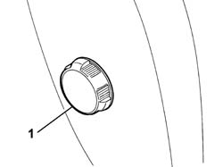

7045A25 squab lumbar knob - r r
- Path
- Procedures > 70 FITTINGS > 7045 FRONT SEATS > 7045A front seat assembly > 7045A25 squab lumbar knob - r r
- Kind
- repair procedure (removal / refitting; the operation number is the code)
- Applies to
- all engines; all production periods
- Interactive page
- https://sloeber94.github.io/elrnDB-fPnd/en/#/2753232
Applies to: all engines; all production periods
 Removing
Removing
 Refitting
Refitting1. Using a cutter, remove the lumbar adjustment knob which is a press fit on the lumbar control device.
 | Name | Country |
|---|---|---|
- | Scraper blade | 1.878.077.000 |

Applies to: all engines; all production periods
Refitting
RemovingCheck the condition of the engagement teeth inside the knob; if they are worn or damaged, replace the knob.
Fit the lumbar adjustment knob, which is a press fit, on the lumbar control device.